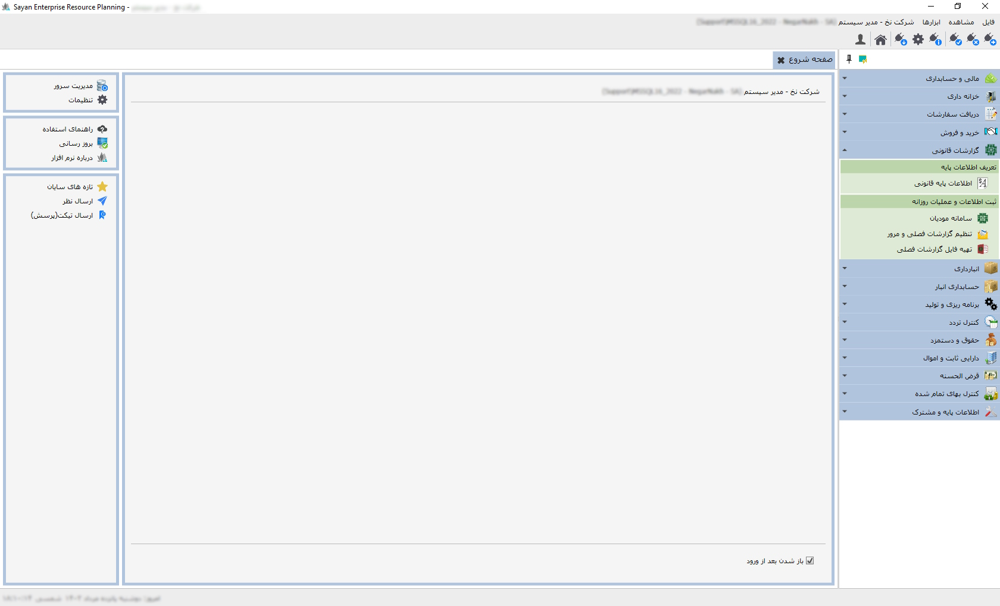

بخش"گزارشات قانونی" نرم افزار سایان جهت سهولت و کارایی در تمامی فرایند های مرتبط با سامانه مودیان مالیاتی و تهیه گزارشات معاملات فصلی شما می باشد این بخش با ابزارهای پیشرفته ،امکان دریافت شناسه یکتا حافظه مالیاتی،فایل امضای الکترونیکی تنظیم و ارسال انواع صورت الحساب الکترونی در 7 الگو و گزارشات فصلی (ماده169 یا صورت معاملات فصلی خرید و فروش)را فراهم می کند بدین ترتیب،قادر خواهید بود تمامی تکالیف قانونی خود را بادقت و سرعت بالا،به موقع و به بهترین شکل انجام دهید.
برای آگاهی بیشتر از نحوه ی استفاده از امکانات این سیستم به راهنمای زیر شاخه های آن مراجعه فرمایید.